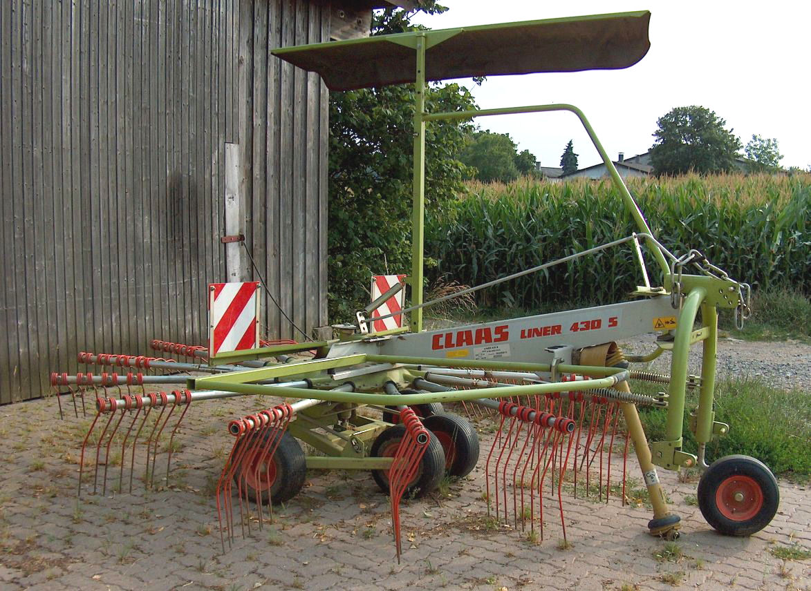

Claas was created in 1913 when August Claas developed the company in Clarholz, Germany. In 1919, the business was transferred to Harsewinkel, Germany, where the company focused on the production of reapers. Two years later the company obtained their first patent – for a knotter to efficiently bind straw. The first Harvester was developed with the European market in mind in 1930, with the first Pick-up Baler following in 1934. In 1936 Claas started to market the first combine harvester built in Europe, as opposed to imported machines previously available. They then offered trailed combine harvesters to the European market.